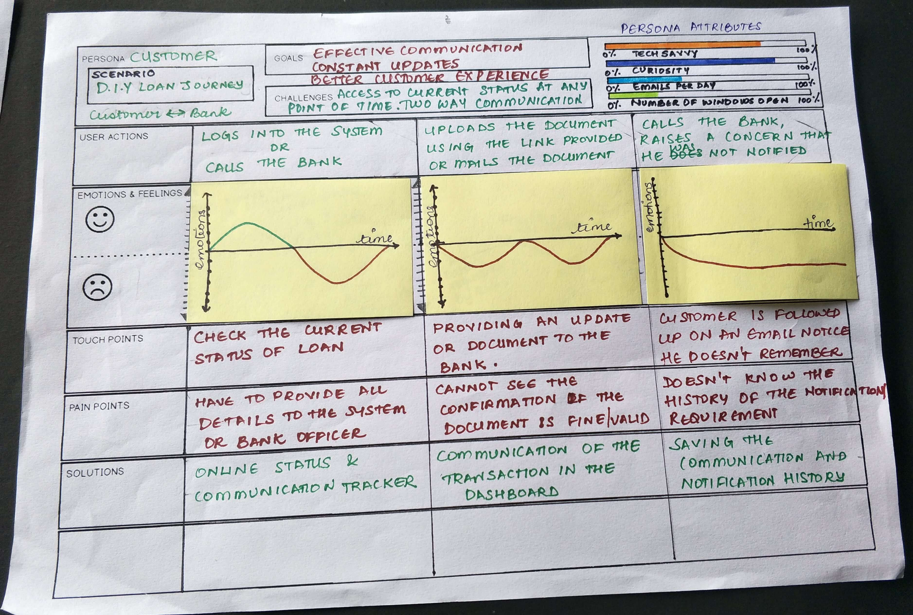

Introduction
This project involved designing a DIY loan journey for a financial institution, focusing on providing a seamless, self-service option for users. The goal was to empower customers to complete the loan application process independently while ensuring that the user experience (UX) met their emotional and functional needs. We aimed to compare three loan journey models: DIY (Do It Yourself), Assisted (via support agent), and Manual (traditional in-person application). This case study is linked to our broader exploration of AI-driven solutions for the financial sector, as detailed in the Chatbot UX Case Study. The insights from that study helped inform our approach to improving user interactions within the DIY loan journey.

Problem Statement
Loan applications are often a complex, intimidating process for customers. The financial institution wanted to introduce a DIY loan application journey that allowed users to apply for loans independently through an online platform, with the option for assistance via a chatbot or support agents when necessary. The challenge was to design an experience that was intuitive, user-friendly, and emotionally supportive throughout the journey.
DIY Journey
In the DIY journey, users interact with the platform independently, making all decisions and filling in forms on their own. This model is the most efficient and empowering for users, offering autonomy and convenience. Users can progress at their own pace, minimizing wait times and maintaining full control of the loan process. It empowers users to complete each step without external assistance.
Assisted Journey
The Assisted Journey offers users guidance from a support agent who helps them through the process. While this provides reassurance, it can introduce delays due to the dependency on an available agent. Users still retain some control over their application, but waiting times and occasional loss of control can cause frustration. This model strikes a middle ground, offering assistance but at the cost of flexibility.
Manual Journey
The Manual Journey follows a traditional, face-to-face process where loan officers guide users through each step. While it provides human interaction and trust, it is often seen as time-consuming, inconvenient, and less efficient. Long wait times and the perceived lack of control make this model less favorable compared to the DIY or Assisted Journeys.

Loan Process Steps
- Authentication: Verifying the user's identity through secure methods.
- Eligibility Criteria: Ensuring the user meets the requirements for the loan.
- Documentation: Collecting required documents such as proof of income and identity.
- Application Form: Completing the loan application form with personal and financial information.
- Loan Disbursement: Once approved, the loan amount is disbursed to the user’s account.
Understanding Our Users: Personas
To empathize with our users and tailor the design to their needs, we created two key personas: the Customer and the Bank Manager. Each persona represents a distinct user group with unique goals, challenges, and pain points.
Customer Persona
Persona 1: Priya, the Loan Applicant (Customer)
Based on our research, including interviews, surveys, and usability tests, we developed a user persona for Priya, a 32-year-old professional from Bengaluru. Priya is tech-savvy and prefers managing her tasks online, especially when balancing work and family. She aims to complete her loan application smoothly and stay updated on its progress. Priya’s pain points include unclear application status, uncertainty about document submission, and excessive follow-ups. This persona helped us design an experience that prioritizes efficiency, clear communication, and a smooth, hassle-free process for loan applicants.
Bank Manager Persona

Persona 2: Amit, the Bank Manager
Our research also led to the creation of Amit’s persona, a 45-year-old senior bank manager from Mumbai with over 15 years of experience. Amit oversees loan approvals and manages customer communication. His motivations include streamlining customer interactions and reducing repetitive tasks. Amit's challenges include juggling multiple systems and tabs, which leads to inefficiency. He values tools that enhance collaboration and speed up approvals. By understanding Amit’s frustrations and goals, we could ensure that our design would improve his workflow, communication, and overall efficiency in managing loan requests and customer interactions.

Design Solutions
Key features included:
- Step-by-Step Guidance: Simplified the process with clear milestones and progress indicators.
- Document Checklist: Provided an interactive checklist to reduce errors.
- Educational Tooltips: Explained loan-related terms in layman’s language.
Challenges and Iterations
Translating complex regulations into user-friendly interfaces required multiple design iterations. Usability testing revealed the need for better navigation and faster load times.
Outcome
The project resulted in:
- A 40% increase in loan application completion rates within three months.
- Positive feedback highlighting improved understanding and confidence of users in managing their loan journeys.